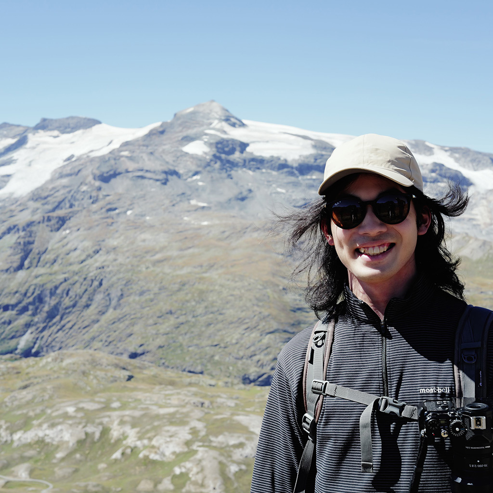
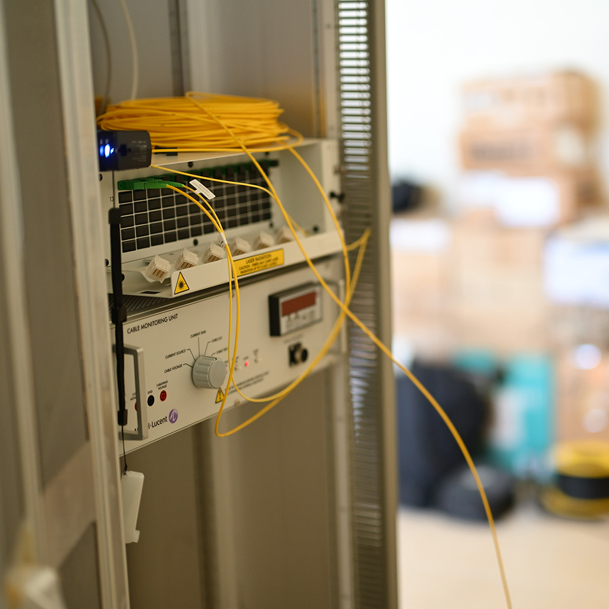
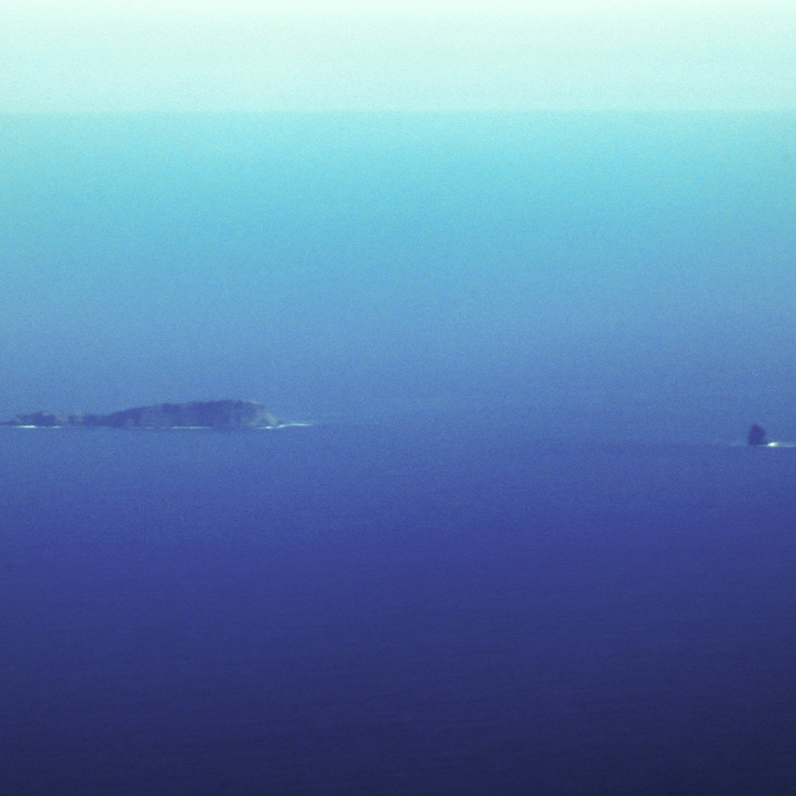
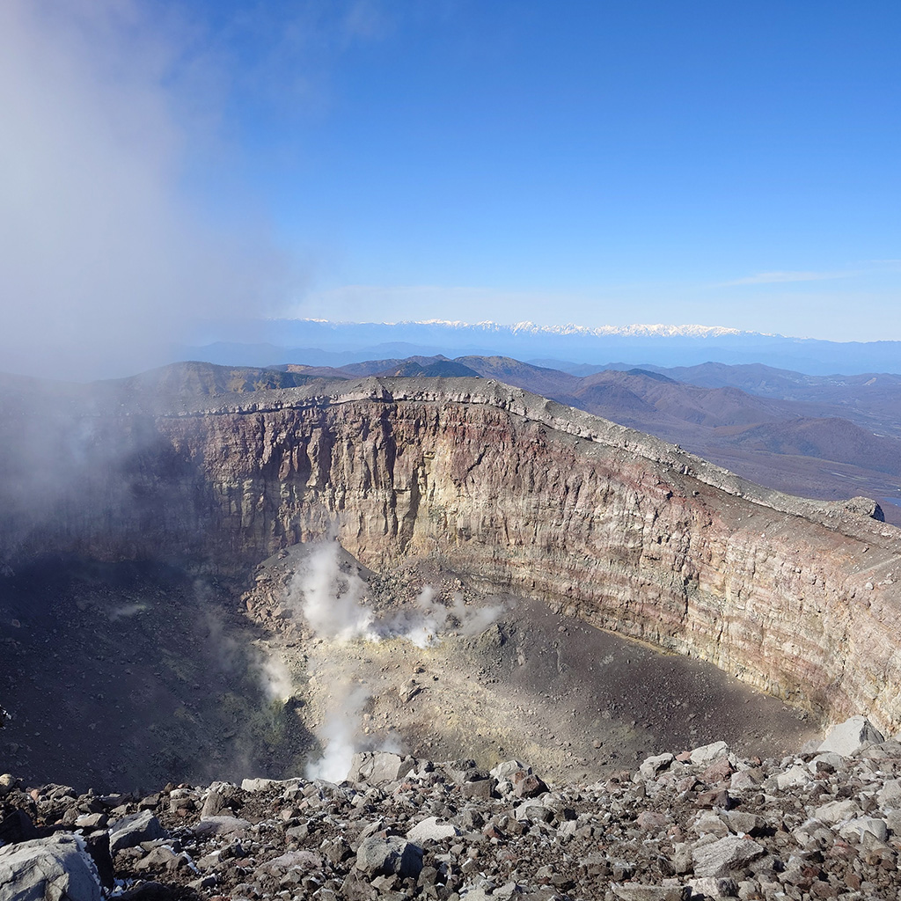

Not yet published :(

Shunsuke Nakao中尾俊介
Graduate School of Science / Earthquake Research Institute, The University of Tokyo, Japan東京大学大学院理学系研究科/東京大学地震研究所
About自己紹介
I study volcano-seismic processes using distributed acoustic sensing (DAS).
分散型音響センシング（DAS）を用いて火山で起こる地震を研究しています．
Research & projects研究・プロジェクト

Distributed acoustic sensing分布型音響センシング
Dense seismic observations with optical fibers for volcano and earthquake monitoring.光ファイバを使った火山・地震の高密度観測．

Tongaトンガ
Submarine cable DAS observations near Hunga volcano after the 2022 eruption.2022年に大規模噴火を起こしたHunga火山周辺における海底ケーブルDAS観測．

Asama Volcano浅間山
DAS observations and volcano monitoring at an active volcano in Japan.日本の活火山におけるDAS観測と火山モニタリング．
Publications 論文
Peer-reviewed papers査読付き論文
Preprintsプレプリント
2026
Analyzing volcanic-like earthquakes with distributed acoustic sensing using a short segment of the Tongan seafloor telecommunications cable
EarthArXiv · Preprint ·
DOI ↗
Presentations 学会発表
2026.9
Detection of VLP Events by DAS Observations at Asama Volcano
浅間DAS観測によるVLPイベントの検出
Volcanological Society of Japan Fall Meeting · Yamagata · Poster presentation
日本火山学会秋季大会 · 山形 · ポスター発表
2026.9
Seismic Monitoring and S-wave Velocity Structure Analysis of the Hunga Volcano
with Distributed Acoustic Sensing on an Active Telecommunication Cable
Galileo Conference: Fibre Optic Sensing in Geosciences · Aussois · Poster presentation
/ Abstract要旨 ↗
2026.5
Seismic Monitoring and S-wave Velocity Structure Analysis of the Hunga Volcano
with Distributed Acoustic Sensing on an Active Telecommunication Cable
通信中の海底ケーブルを用いた分布型音響センシングによる
フンガ火山の地震モニタリングとS波速度構造解析
JpGU-AGU Joint Meeting 2026 · Makuhari · Poster presentation
日本地球惑星科学連合2026年大会 · 幕張 · ポスター発表
2026.5
Analyzing volcanic-like earthquakes with distributed acoustic sensing
using a short segment of the Tongan seafloor telecommunications cable
EGU General Assembly 2026 · Vienna · Poster presentation
/ Abstract要旨 ↗
2025.10
Preliminary report of volcano observations in Tonga using DAS
via seafloor cables during communication use
通信中ケーブルを用いたトンガにおけるDAS火山観測の実施（速報）
Volcanological Society of Japan Fall Meeting · Matsumoto · Poster presentation
日本火山学会秋季大会 · 松本 · ポスター発表
/ Abstract要旨 ↗
2025.5
Estimation of Volcanic Earthquake Source Direction in Tonga DAS Observations
トンガDAS観測における火山性地震の震源方位推定
Japan Geoscience Union Meeting 2025 · Makuhari · Oral presentation
日本地球惑星科学連合大会 · 幕張 · 口頭発表
2024.10
Estimation of hypocenter direction by DAS observation
using Tonga seafloor telecommunications cable
トンガ海底通信ケーブルを用いたDAS観測による震源方位推定
Volcanological Society of Japan Fall Meeting · Sapporo · Poster presentation
日本火山学会秋季大会 · 札幌 · ポスター発表
/ Abstract要旨 ↗
2024.5
Detection of volcanic earthquakes by DAS observation
using Tonga seafloor telecommunications cable
トンガ海底通信ケーブルを用いたDAS観測による火山性地震の検出
Japan Geoscience Union Meeting 2024 · Makuhari · Poster presentation
日本地球惑星科学連合大会 · 幕張 · ポスター発表
Experience & Education 経歴
Education 学歴
2026 –
Doctoral Program
博士課程
Department of Earth and Planetary Science,
Graduate School of Science,
The University of Tokyo
東京大学大学院理学系研究科 地球惑星科学専攻
Ichihara Laboratory,
Volcano Research Center,
Earthquake Research Institute
東京大学地震研究所 火山噴火予知研究センター
市原研究室
2024 – 2026
Master's Program
修士課程
Department of Earth and Planetary Science,
Graduate School of Science,
The University of Tokyo
東京大学大学院理学系研究科 地球惑星科学専攻
2020 – 2024
Undergraduate Program
学士課程
Department of Earth and Planetary Physics,
Faculty of Science, The University of Tokyo
東京大学理学部 地球惑星物理学科